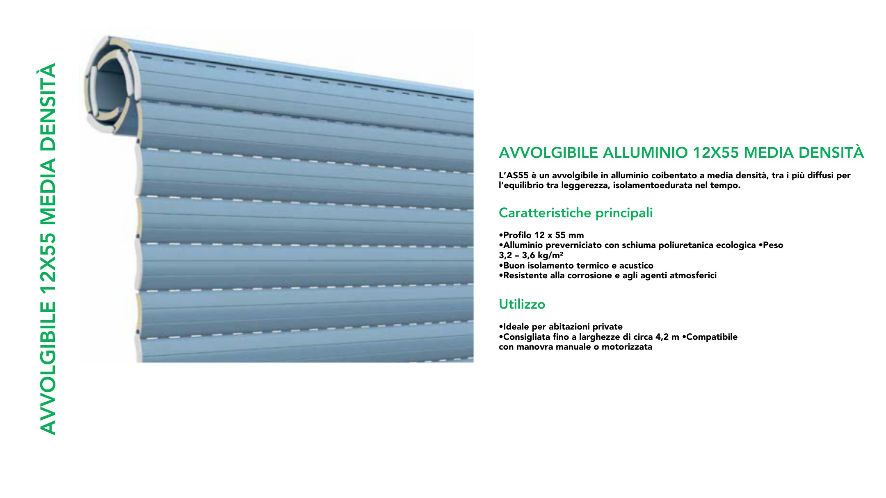

Avvolgibili
AVVOLGIBILE 12X55 MEDIA DENSITA
MODELLO: AVVOLGIBILE_12X55_MEDIA_DENSITA PAGINA PDF: 168
TESTO PDF: GUIDE COMPATIBILI PER SOSTITUZIONE GUIDE COMPATIBILI PER CASSONETTI IN ALLUMINIO in allum. A 27 25,5 x 30 mm GUIAL..27M in allum. A 31 24 x 31 mm GUIAL..31M in allum. A 32 41 x 31,5 mm GUIAL..32M 30 27, 6 3 1 2 8 28, 8 25,5 31, 4 30 28,2 24, 4 25,5 25,5 19,9 9 18 24 23 17 15 4 39 18 17,9 17 9 25 18,6 41 19,1 20 22, 9 20 21 75 35 39 8 0 2 8 51 in allum. A 33 75 x 40,5 mm GUIAL..33M in allum. A 34 25,5 x 30 mm GUIAL..34M 40,5 29 34 30 26, 1 19 80 75 45 25,5 35,4 19,1 4 in allum. A 40 25,5 x 40 mm GUIAL..40M 27, 8 25,8 18,4 17 23,6 40 GUIDE COMPATIBILI PER NUOVE REALIZZAZIONI •Ideale per abitazioni private •Consigliata fino a larghezze di circa 4,2 m •Compatibile con manovra manuale o motorizzata •Profilo 12 x 55 mm •Alluminio preverniciato con schiuma poliuretanica ecologica •Peso 3,2 – 3,6 kg/m² •Buon isolamento termico e acustico •Resistente alla corrosione e agli agenti atmosferici
L’AS55 è un avvolgibile in alluminio coibentato a media densità, tra i più diffusi per l’equilibrio tra leggerezza, isolamentoedurata nel tempo. AVVOLGIBILE ALLUMINIO 12X55 MEDIA DENSITÀ Utilizzo Caratteristiche principali AVVOLGIBILE 12X55 MEDIA DENSITÀ